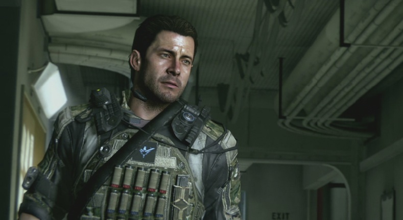
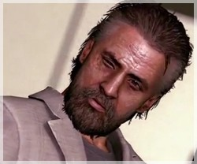

Black Ops II is the first Call of Duty video game to feature branching storylines, in which the player's choice affects both the current mission and in turn, the overall course of the story. Known as "Strike Force missions", these branching storylines appear during the 2025 storyline and feature permanent death. The success or failure of these missions can have ramifications for the wider campaign storyline. Choosing one of the missions locks out the others unless the player begins a fresh campaign. Strike Force missions allow the player to control a number of different war assets, such as unmanned aerial vehicles, jet fighters and robots. If the player dies in a Strike Force mission, the campaign continues recording that loss, as opposed to letting the player load a previously saved checkpoint. The player's progress in the Strike Force missions may go on to change even the plans of the story's antagonist, Raul Menendez. By the end of the game, the player may have changed the results of the new Cold War, and the player is shown what could have gone differently.
Treyarch has confirmed that the Zombies mode will return for Black Ops II with new game modes. Its predecessors were Call of Duty: World at War and Call of Duty: Black Ops. This is the third time for the Zombies mode to appear in a Call of Duty game, and the first time to have game modes other than the traditional Survival mode. Treyarch has also confirmed that Zombies will run on the game's multiplayer engine, allowing for a deeper community experience, along with new features. A new, 8 player co-op game called "Grief" is also supported, featuring 2 teams of 4 players competing to survive, unlike Call of Duty: World at War and Call of Duty: Black Ops, which only supported 4 player online co-op. As with the previous game, each map contains "Easter eggs" side quests, which is used to progress the story. |
|  | David Mason is the main protagonist, and son of Call of Duty: Black Ops main protagonist Alex Mason. He was raised in his father's hometown of Fairbanks, Alaska, David's relationship with his father soured after the death of his mother. Due to his father's past experiences, harsh upbringing, and his commitment to serve the U.S., David held a deep resentment towards his dad but did not want to lose him, which was why he had his dad promise to not go on any more missions for the military. |
|  | Raul Menendez is a Nicaraguan political activist and the main antagonist of Call of Duty: Black Ops II and Call of Duty: Strike Team. He is the leader of a terrorist organization named Cordis Die and is an old nemesis of Alex Mason and Frank Woods, and David Mason's archnemisis in 2025. He hacked multiple automated US military drones, using them to attack its domestic major cities, as well as cities throughout China such as Beijing, Shanghai and Hong Kong, eventually destroying the drones after the damage was done. Using the drones, he crippled the US defenses, leaving the US military vulnerable in an attempt to ignite a worldwide uprising. He has a noticeably large scar, and burn mark on his right eye. |